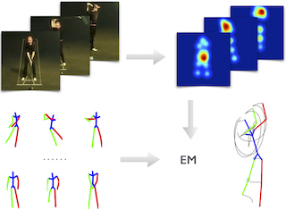
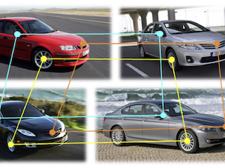
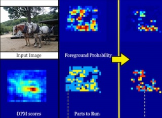
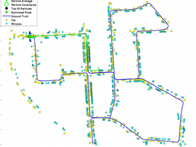
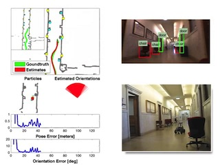
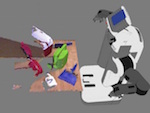
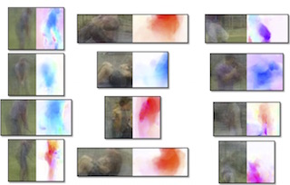
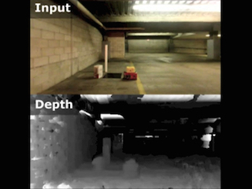

About Me
CV
Contact: menglong AT google.com
I'm currently working on some cool Deep Learning stuff at Google. Before joining Google, I obtained a PhD degree in Computer Information Science in 2016, at GRASP Lab, University of Pennsylvania, advised by Kostas Daniilidis. I received a Master's degree in Robotics from the University of Pennsylvania in 2012 and a Bachelor's degree in Computer Science from Fudan University in 2010.
My research interests are Computer Vision, Robotics and Machine Learning, especially in object recognition, human pose estimation, action recognition, visual SLAM and text recognition.
I'm currently working on some cool Deep Learning stuff at Google. Before joining Google, I obtained a PhD degree in Computer Information Science in 2016, at GRASP Lab, University of Pennsylvania, advised by Kostas Daniilidis. I received a Master's degree in Robotics from the University of Pennsylvania in 2012 and a Bachelor's degree in Computer Science from Fudan University in 2010.
My research interests are Computer Vision, Robotics and Machine Learning, especially in object recognition, human pose estimation, action recognition, visual SLAM and text recognition.
Code
Fast object detector - Active Deformable Part Models.
Video annotation tool for human joints, Amazon Mturk deployable.
Camera pose estimation, involved in
Google Project Tango.
Text detection and recognition, ROS package, PR2 deployable.
Fast A* planning algorithm with quadtree decomposition.
Datasets
15-class action dataset, frame-by-frame annotated human body joints.
Selected Publications

1. Sparseness Meets Deepness: 3D Human Pose Estimation
from Monocular Video
X. Zhou*, M. Zhu*, S. Leonardos, K. Derpanis and K. Daniilidis,
*Equal Contribution
Computer Vision and Pattern Recogition (CVPR), 2016.
[PDF]
from Monocular Video
X. Zhou*, M. Zhu*, S. Leonardos, K. Derpanis and K. Daniilidis,
*Equal Contribution
Computer Vision and Pattern Recogition (CVPR), 2016.
[PDF]

3. Multi-Image Matching via Fast Alternating Minimization
X. Zhou, M. Zhu and K. Daniilidis,
International Conference on Computer Vision (ICCV), 2015. (Oral)
[PDF]
X. Zhou, M. Zhu and K. Daniilidis,
International Conference on Computer Vision (ICCV), 2015. (Oral)
[PDF]

4. Active Deformable Part Models Inference
M. Zhu, N. Atanasov, G. J. Pappas, and K. Daniilidis,
European Conference on Computer Vision (ECCV), 2014.
[PDF / bibtex / video / project page (code)]
M. Zhu, N. Atanasov, G. J. Pappas, and K. Daniilidis,
European Conference on Computer Vision (ECCV), 2014.
[PDF / bibtex / video / project page (code)]
@InProceedings{ZhuADPM2014,
author = {M. Zhu and N. Atanasov and G. Pappas and K. Daniilidis},
title = {{Active Deformable Part Models Inference}},
year = {2014},
booktitle = {European Conference on Computer Vision (ECCV)}
}

@Article{Atanasov_SemanticLocalization_IJRR15,
author = {N. Atanasov and M. Zhu and K. Daniilidis and G. Pappas},
title = {{Localization from Semantic Observations via the Matrix Permanent}},
year = {2015},
journal = {International Journal of Robotics Research}
}

@InProceedings{Atanasov_SemanticLocalization_RSS14,
author = {N. Atanasov and M. Zhu and K. Daniilidis and G. Pappas},
title = {{Semantic Localization Via the Matrix Permanent}},
year = {2014},
booktitle={Robotics: Science and Systems (RSS)}
}

7. Single Image 3D Object Detection and Pose Estimation
for Grasping
M. Zhu, K. Derpanis, Y. Yang, S. Brahmbhatt, M. Zhang,
C. Phillips, M. Lecce and K. Daniilidis,
International Conference on Robotics and Automation(ICRA),2014.
[PDF / bibtex / video / project page]
for Grasping
M. Zhu, K. Derpanis, Y. Yang, S. Brahmbhatt, M. Zhang,
C. Phillips, M. Lecce and K. Daniilidis,
International Conference on Robotics and Automation(ICRA),2014.
[PDF / bibtex / video / project page]
@article{zhu2014grasping,
title = {Single Image 3D Object Detection
and Pose Estimation for Grasping},
author = {Zhu, Menglong and Derpanis, Konstantinos G
and Yang, Yinfei and Brahmbhatt, Samarth
and Zhang, Mabel and Phillips, Cody
and Lecce, Matthieu and Daniilidis, Kostas}
booktitle = {International Conference on Robotics and Automation}
year = {2014}
}

8. From Actemes to Action: A Strongly-supervised
Representation for Detailed Action Understanding
W. Zhang, M. Zhu and K. Derpanis,
International Conference on Computer Vision (ICCV), 2013.
[PDF / bibtex / video / project page / action dataset]
Representation for Detailed Action Understanding
W. Zhang, M. Zhu and K. Derpanis,
International Conference on Computer Vision (ICCV), 2013.
[PDF / bibtex / video / project page / action dataset]
@inproceedings{zhang2013actemes,
title = {From Actemes to Action: A Strongly-supervised
Representation for Detailed Action Understanding},
author = {Zhang, Weiyu and Zhu, Menglong
and Derpanis, Konstantinos G},
booktitle = {International Conference on Computer Vision},
pages = {2248--2255},
year = {2013},
}

@inproceedings{zhu2012monocular,
title = {Monocular visual odometry and dense 3d
reconstruction for on-road vehicles},
author = {Zhu, Menglong and Ramalingam, Srikumar
and Taguchi, Yuichi and Garaas, Tyler},
booktitle = {European Conference on Computer Vision,
Workshops and Demonstrations},
pages = {596--606},
year = {2012},
}
Patents
Method and System for Determining Poses of Vehicle-Mounted
Cameras
for In-Road Obstacle Detection, US 20140037136 A1.
M. Zhu, S. Ramalingam and Y. Taguchi, [Link]
for In-Road Obstacle Detection, US 20140037136 A1.
M. Zhu, S. Ramalingam and Y. Taguchi, [Link]
Invited Talks
April 09, 2014, VASC Seminar at CMU
Teaching
Advanced Robotics, 2015 Spring,
Learn to program a quadrotor
Machine Perception, 2013 Spring
Machine Learning, 2012 Fall, Remebering Ben Taskar
Introduction to Computer Programming, 2012 Spring
Programming Languages and Techniques III, 2011 Spring
Programming Languages and Techniques III, 2011 Fall